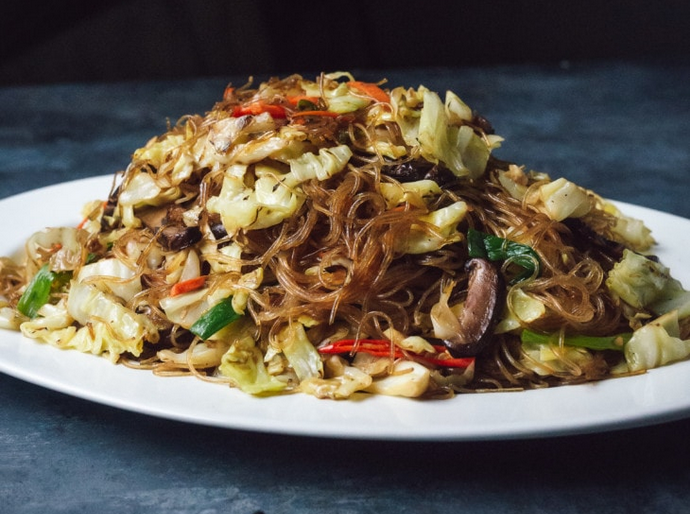

Noodles with chicken and vegetables

Description
A guide to stir-frying vermicelli noodles, Chinese style, in only 20
minutes. Tossed in a hot pan with some simple seasonings, shiitake
mushrooms, and cabbage, the springy noodles become irresistibly coated
with umami and laced with the aroma of scallion, ginger, and garlic. Vegan
and gluten-free.
Ingredients
The vermicelli noodles are sold in any Asian grocery store, and you can
often find it in the Asian aisle of a supermarket.
Apart from the noodles, you will need:
-
1. Vegetables. I used shredded green cabbage and carrots.
- 2. Aromatics. Ginger, garlic, and scallion.
-
3.
Seasonings. Primarily, salt, soy sauce (both light and dark, see
notes below), rice vinegar, sugar, toasted sesame oil, and ground
white pepper.
Instructions
-
Make the sauce: In a small bowl, stir together the
sauce ingredients until combined.
-
Prepare the noodles: In a bowl, soak the noodles in
warm water for 15 minutes, then drain them in a colander and place them
in a large bowl. Cut the noodles roughly in half with clean kitchen
scissors. Add the scallion oil and dark soy sauce, and toss to coat—this
will prevent the noodles from sticking to the wok later and add some
base flavor.
-
In the meantime, shred the cabbage and carrot, thinly slice the
mushrooms and green onions, and mince the garlic and ginger.
-
Heat a wok over medium-high heat until a drop of water evaporates
immediately on contact. Add the 2 tablespoons vegetable oil and swirl it
around to evenly coat the sides. Add the garlic, white parts of the
scallions, shiitake mushrooms, and chilies and stir-fry briefly, about
30 seconds, until the mushrooms are beginning to brown and everything is
fragrant. Add the cabbage and toss a few times, stir-frying until the
cabbage is softened, about 2 minutes. Sprinkle on with the salt and stir
to incorporate.
-
Push the cabbage to one side of the wok. Give the sauce a stir and pour
it into the center of the wok. It should sizzle as it hits the hot
surface. Immediately add the vermicelli noodles. Stir continuously and
fold the noodles to incorporate them with the vegetables and the sauce.
If the noodles are cooking too quickly, reduce the heat—you don’t want
them to dry out and stick to the bottom. Add more liquid, if needed.
When the noodles are piping hot, tender with a slight chew and there
isn’t any more liquid visible at the bottom of the wok, remove it from
the heat. Stir in the green parts of the scallions, the sesame oil, and
ground white pepper (if using). Taste and add additional salt if needed.
Serve immediately.
-
Add sauce and noodles. Give the sauce a stir and pour it into the wok.
It should sizzle as it hits the hot surface. Add the vermicelli noodles
and pressed tofu (if using). Continue to cook, stirring constantly and
folding the noodles over with your spatula, until liquid is mostly
absorbed. If the noodles are cooking too quickly, reduce the heat— you
don't want them to dry out and stick to the bottom. Add salt to taste.
That's it! Switch off the heat and stir in the fragrant, toasted sesame
oil— you want to add this at the very end, since sesame oil doesn't
withstand high heat (it can turn bitter). Taste and season with additional
salt as needed, then garnish with the green parts of the scallions,
transfer to a serving dish and serve hot.
Back to main page